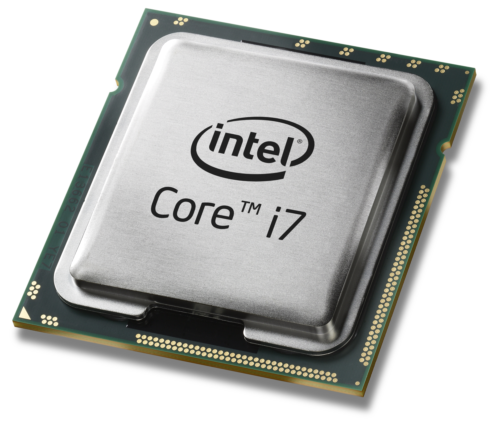

Home || About || Gallery || Video Gallery
These are the main components of a Desktop PC,Laptops and Mac
Many people now a days just buy a computer because it looks nice on the outside or wants to use it for gaming, personal use or business services. But for the people who do that do not know what is truly inside a PC desktop computer, laptop or even a mac. I am here to help out and talk about what is in a computer and which one would be more beneficial to you if you want to know which one I like the most and my opinions go to my bio for more information. :)
ATX stands for Advance Technology Extended which is the most popular motherboard
There are also other form factors such as NLX (New Low Profile) and LPX (Low Profile Extended)
One of the best form factor designs that keep a system cool would be called BTX (Balance technology Extended)
There are Processor Sockets that determine which processor a motherboard can support provides mechanical and eletrical connections between a microprocessor and a circuit board locks Centeral Processing Unit into place, preventing it from moving or being damages
- Pin grid array (PGA) socket: Pins aligned in uniform rows around socket but pins easily bent
- Staggered pin grid array (SPGA): Pins staggered over socket and Squeezes more pins into a small space
- Land grid array (LGA): Intel Technology Uses lands rather than pins
Processor Basic Components:
Input/output (I/O) unit: Manages data and instructions entering and leaving the processor
Control unit: Manages all activies inside the processor
One or more arithmetic logic units(ALU): Performs all logical operations (comparisions) and calculations
Registers: Small holding areas on processor chip(32 or 64 bits each typically 16 registers)Holds counters, data, instructions, and addresses ALC is currently processing
Internal memory caches (L1 is processor chip, L2 is on the processor packages, L3 is on the Motherboard): Holds data and instructions to be processed by ALU

RAM is used to speed up your computer there are various of factors to consider when looking at overall speed
- How much RAM is installed and the technology used
- Speed of the memory in ns,MHz, or PC rating
- ECC/parity or non-ECC/non-parity
- Use of dual channeling
There are diffrent types of RAM
SRAM (static RAM) is random access memory (RAM) that retains data bits in its memory as long as power is being supplied. Unlike dynamic RAM (DRAM), which stores bits in cells consisting of a capacitor and a transistor, SRAM does not have to be periodically refreshed.
Dynamic random-access memory (DRAM) is a type of random-access memory that stores each bit of data in a separate capacitor within an integrated circuit. The capacitor can be either charged or discharged; these two states are taken to represent the two values of a bit, conventionally called 0 and 1.
Synchornous DRAM (SDRAM) is a type of memory stores on DIMM (dual inline memory module) that runs in sync with the system clock; running at the notch on the DIMM.
There are two types of hard drives one is called HDD (Hard Disk Drive) and a SSD (Solid State Drive). Hard Drives have been around since 1956
Inside a HDD is something that looks more than a bit like an old record player. There’s a platter, or stacked platters, which spin around a central axis a spindle typically at about 5,400 to 7,200 revolutions per minute. Some hard drives built for performance work faster.
“Solid State” is industry shorthand for an integrated circuit, and that’s the key difference between an SSD and a hard drive: there are no moving parts inside an SSD. Rather than using disks, motors and read/write heads, SSDs use flash memory instead that is, computer chips which retain their information even when the power is turned off.
Popular optical drive formats include CD-ROM, CD-R, CD-RW, DVD, DVD-RAM, DVD-R, DVD+R, DVD-RW, DVD+RW, DVD-R DL, DVD+R DL, BD-R, BD-R DL & TL, BD-RE, BD-RE DL & TL, and BDXL.

Remember to use antistatic bracelet clipped to the side of the computer to prevent ESD when working on a computer